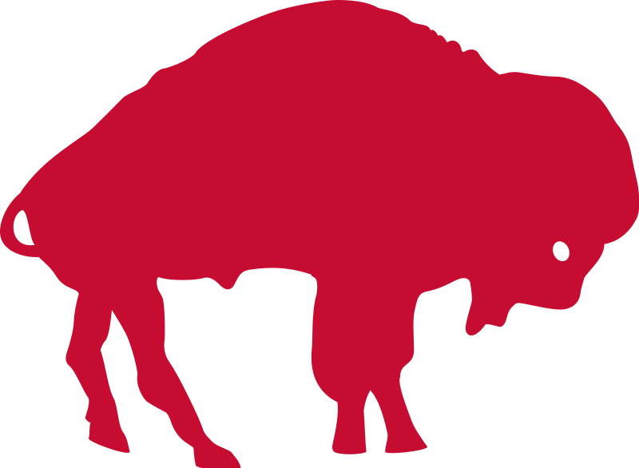
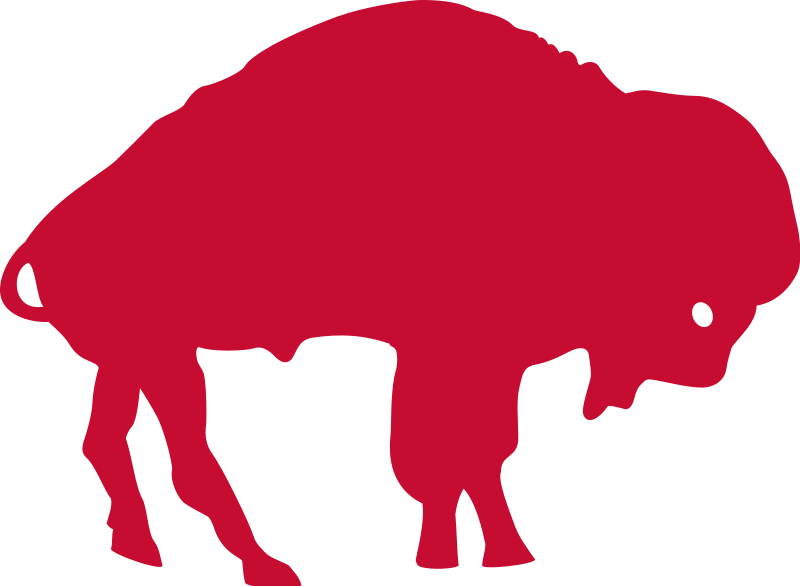

The 1980s started off good for the Bills, with a couple of playoff appearances, but quickly went downhill. Between 1982 and 1987, the Bills went well under .500 almost every year. This was then combined with another threat to move the team, with game attendance way down. However, after 1985, the team started looking up again. After former draft pick quarterback Jim Kelly came back from the USFL, players like Thurman Thomas, Bruce Smith, Andre Reed, and others were acquired, and head coach Marv Levy was hired, the team was set for a run.
The 1980s
 
